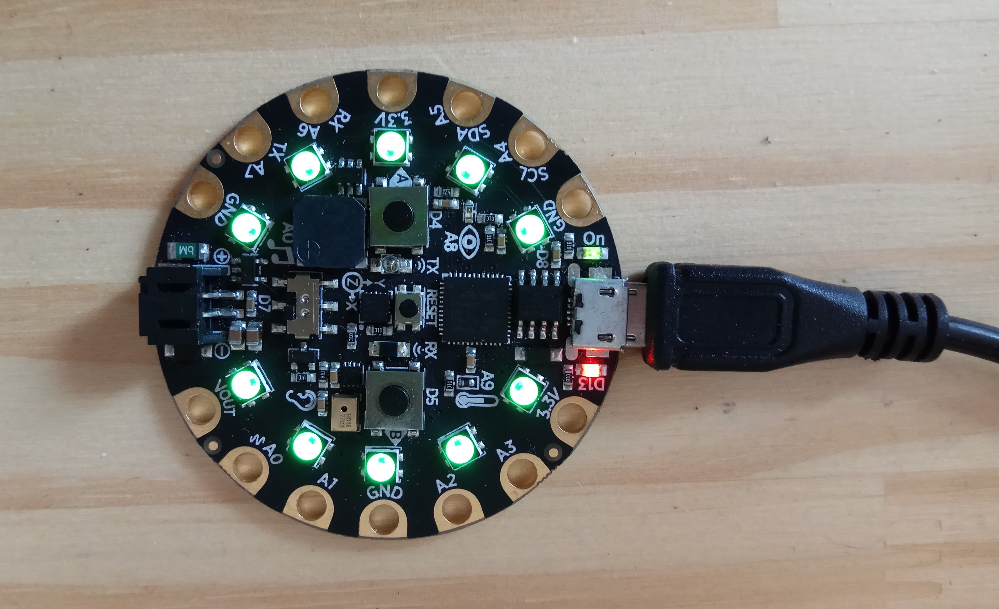
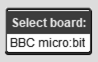

Download MicroBlocks for

Download MicroBlocks for
Current version: 0.2.1, released on July 13, 2019.
If you have a BBC micro:bit, Calliope mini, or AdaFruit Circuit Playground Express setup is easy! You can follow the setup instructions below or watch this movie:
When you plug in your board, Windows 10 should find and install the correct drivers. On earlier versions of Windows, you may need to manually install the drivers using one of the links below.
Note: Be sure to plug in your board board before installing the drivers.
Serial drivers for BBC micro:bit and Calliope mini (mbed)
Serial drivers for Circuit Playground Express (AdaFruit boards)
On Mac OS X, you have to use the open menu the first time you run MicroBlocks.
Right-click on MicroBlocks.app and select "Open" from the menu:

Then click the "Open" button in the confirmation dialog:
Note: You will need administrator access to do this. Note: Most browsers are set to automatically unzip downloaded files. If your browser is not, you'll see a file like "MicroBlocks.zip" in your downloads folder. Just double-click on that file to unzip it, then follow the instructions above to open the unzipped application. On most Linux systems, users don’t have access to the USB serial port by default, so MicroBlocks will get an error when it tries to open the serial port to connect to the board. One solution to that is to launch MicroBlocks from the command line using “sudo”: A more convenient long term solution is to add yourself to the group that owns the serial port.
First, with the micro:bit attached, print the serial port entry with the command: You'll see a line such as: The serial port’s group is the word after “root”, in this case “dialout”. Add yourself to that group: Log out and back in to make this change take effect. Now you can start MicroBlocks simply by double-clicking on it's icon. Note: If you have a Circuit Playground Express you need to click the small "boot" button in the middle of the board twice quickly to prepare the board. The 10 NeoPixels around the edge of the board will turn green when the board is ready.  Start MicroBlocks, then click the "About" button and select install MicroBlocks on board: Select your board from the menu (there will only one entry in the menu unless you have several boards plugged in):  Note: This process is slightly different on Chromebooks; follow the on-screen instructions. It takes five to ten seconds to install MicroBlocks. When that's done, the board unmounts its USB drive, causing a notification to appear on some platforms. That's normal; you can just close the notification window. To connect to your board, click the Connect button and select the serial port. When the board is connected the connection indicator will turn green: As a quick test, click on the block: The user LED on your board should light up, showing that the board is connected. You're ready to code! If you have an Adafruit ItsyBitsy, you can install MicroBlocks by drag-and-drop.
First, download the precompiled binary,
vm.itsybitsy.uf2.
Plug your ItsyBitsy into a USB port and double-click the tiny reset button
on the board. The LED should turn green, and the ItsyBitsy should appear
on your computer as a Flash drive. Drag and drop vm.itsybitsy.uf2 onto that drive.
The VM will install, the Flash drive will eject itself, and you're good to go! MicroBlocks also runs on some microcontroller boards that are a bit
more challenging to use. These boards may have additional features, such
as WiFi or Bluetooth support, but they generally require the user to connect additional
electronic components to do interesting things. Since these boards do not support
drag-and-drop installation of MicroBlocks, you must use the appropriate (and free!)
installation software for that board, such esptool.py for NodeMCU and ESP32 boards
or the Arduino IDE for 32-bit Arduinos.
Add yourself to the serial port group (Linux only)
sudo ublocks-linux64bit
ls -l /dev/ttyACM0
crw-rw---- 1 root dialout 166, 0 Jan 25 07:23 /dev/ttyACM0
sudo usermod -G dialout -a YOUR_USER_NAME
Plug in your board

Install MicroBlocks on your board (first time only)

Connect to your board


Advanced Setup for Other Boards